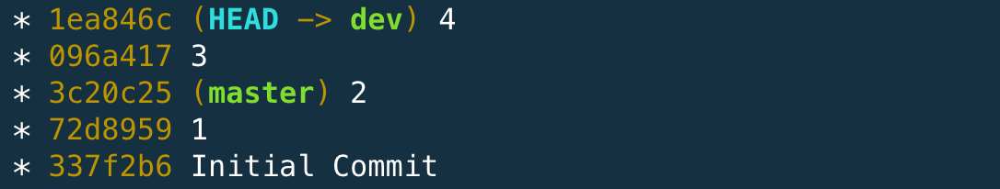
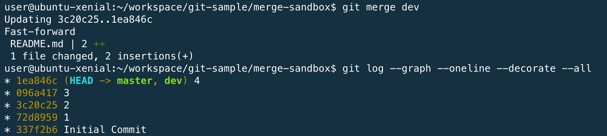
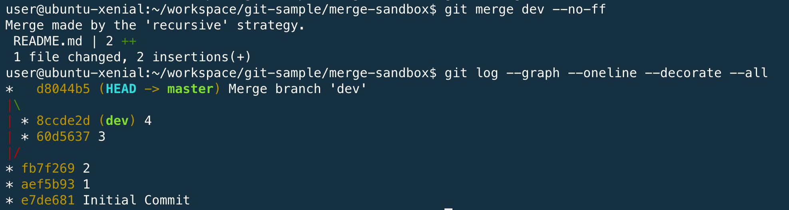

git merge 指令
- 合併
- 修改內容的歷史記錄會維持原狀，但是合併後的歷史紀錄會變得更複雜。
- 預設會以
fast-forward的模式進行。
Fast-Forward Merge
當你目前的位置 (HEAD) 是某個要被 merge branch 上的 commit 的 root commit ，在沒有任何新的 commit 的情形下，要 merge 回來的時候，就會觸發 fast-forward 。
由於在原本的分支上沒有新的變更紀錄需要被 merged ，預設就會觸發 fast-forward merge ，就會直接把這個 commit HEAD 移動到要被 merge 的 commit 的位置，也不會新增一個 merge commit 。
merge 之前

merge 之後

No Fast-Forward Merge
git merge dev —-no-ff

使用情境
- 在開發一個功能時，通常都會開一支新的分支，使用 --no-ff 可以讓成員在日後可以很清楚辨識不同的功能，所包含的送交歷史紀錄有哪些。
- GitHub merge pull request 的策略，也是使用 --no-ff ，也是讓開發者可以方便辨別。
缺點
- 即使一個很小的修改，也會拉出一條支線圖。
常用範例
| 範例 | 說明 |
|---|---|
| git merge master | 合併 master 分支的資料，到目前分支 |
| git merge –abort | 放棄合併 |
練習題： 合併 dev1 和 dev2 的內容至 master 分支
- 透過
git checkout master指令，切換到 master 分支 - 透過
git merge dev1指令，來合併 dev1 分支的內容 - 自動合併成功
- 透過
git merge dev2指令，來合併 dev2 分支的內容 - 自動合併發生衝突
$ git merge dev1
Updating 957d1b3..98841bf
Fast-forward
a.txt | 2 +-
1 file changed, 1 insertion(+), 1 deletion(-)
$ git merge dev2
Auto-merging a.txt
CONFLICT (content): Merge conflict in a.txt
Automatic merge failed; fix conflicts and then commit the result.
語法結構
usage: git merge [<options>] [<commit>...]
or: git merge [<options>] <msg> HEAD <commit>
or: git merge --abort
-n do not show a diffstat at the end of the merge
--stat show a diffstat at the end of the merge
--summary (synonym to --stat)
--log[=<n>] add (at most <n>) entries from shortlog to merge commit message
--squash create a single commit instead of doing a merge
--commit perform a commit if the merge succeeds (default)
-e, --edit edit message before committing
--ff allow fast-forward (default)
--ff-only abort if fast-forward is not possible
--rerere-autoupdate update the index with reused conflict resolution if possible
--verify-signatures Verify that the named commit has a valid GPG signature
-s, --strategy <strategy>
merge strategy to use
-X, --strategy-option <option=value>
option for selected merge strategy
-m, --message <message>
merge commit message (for a non-fast-forward merge)
-v, --verbose be more verbose
-q, --quiet be more quiet
--abort abort the current in-progress merge
--progress force progress reporting
-S, --gpg-sign[=<key-id>]
GPG sign commit
--overwrite-ignore update ignored files (default)